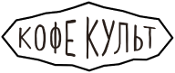

С нами сотрудничает:
Капучино - это итальянский кофейный напиток, состоящий из эспрессо с добавлением равных частей горячего молока и молочной пены. Он обладает богатым кофейным вкусом и гладкой текстурой
Латте - это кофейный напиток, приготовленный из эспрессо и большого количества горячего молока. Он обычно имеет мягкий вкус кофе и пенку на поверхности
Этот сэндвич состоит из нежного лосося, свежего гуакамоле (авокадового пюре с лимоном и специями), и обычно подаётся на хлебе или багете.
Это ароматный чай, состоящий из смеси сушеных трав и цветов, таких как мята, лаванда, ромашка и другие